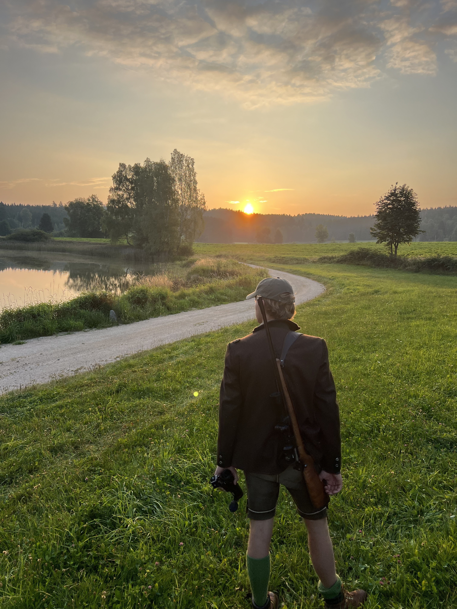
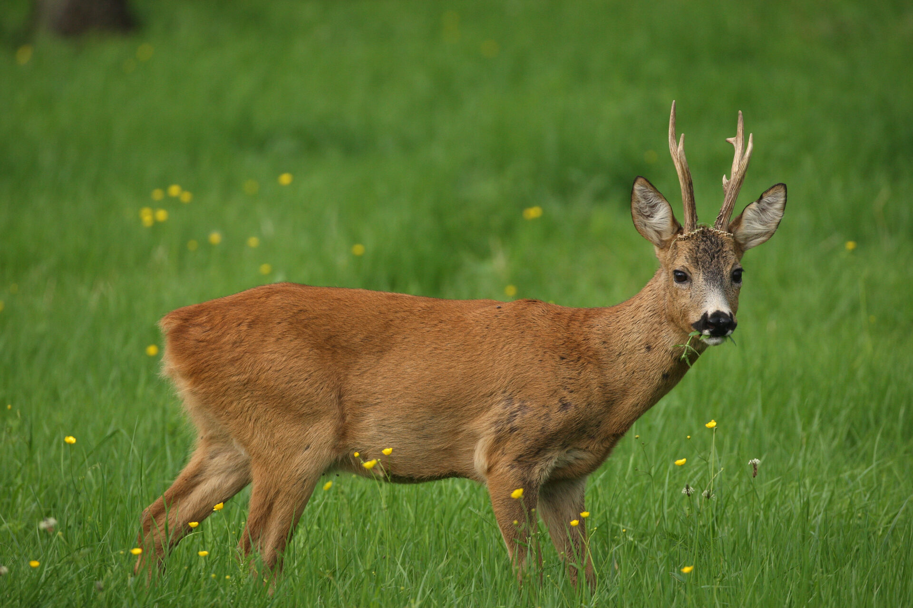
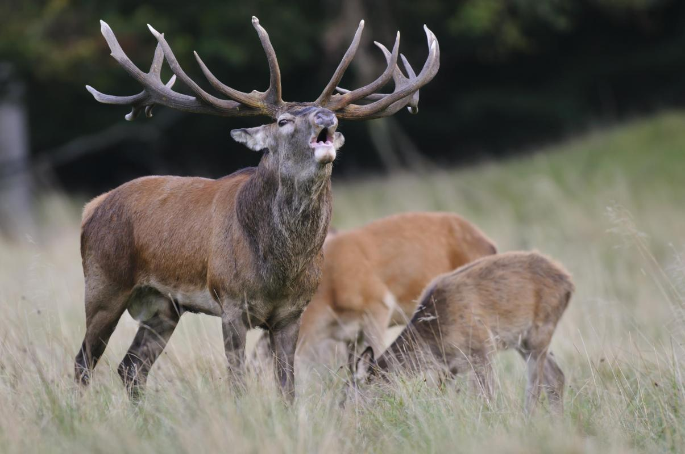
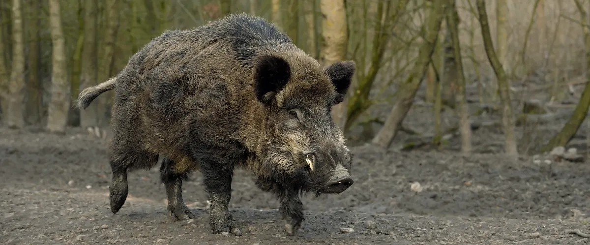
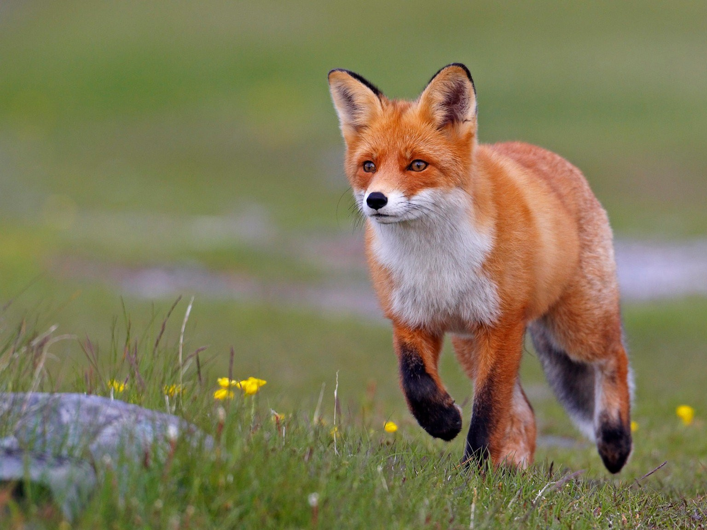
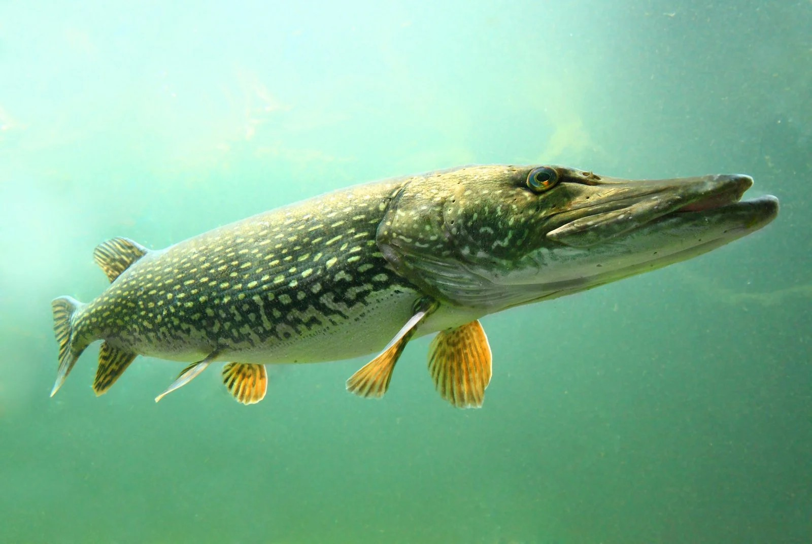
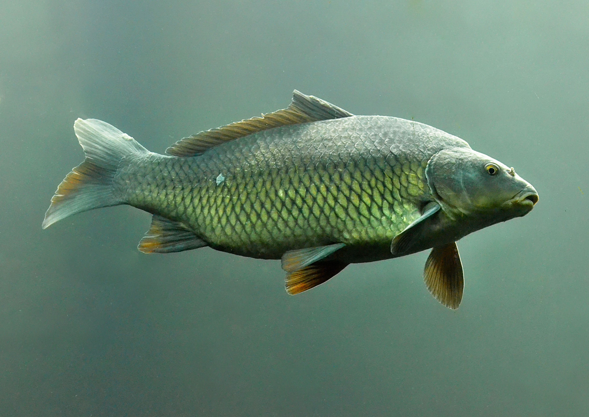
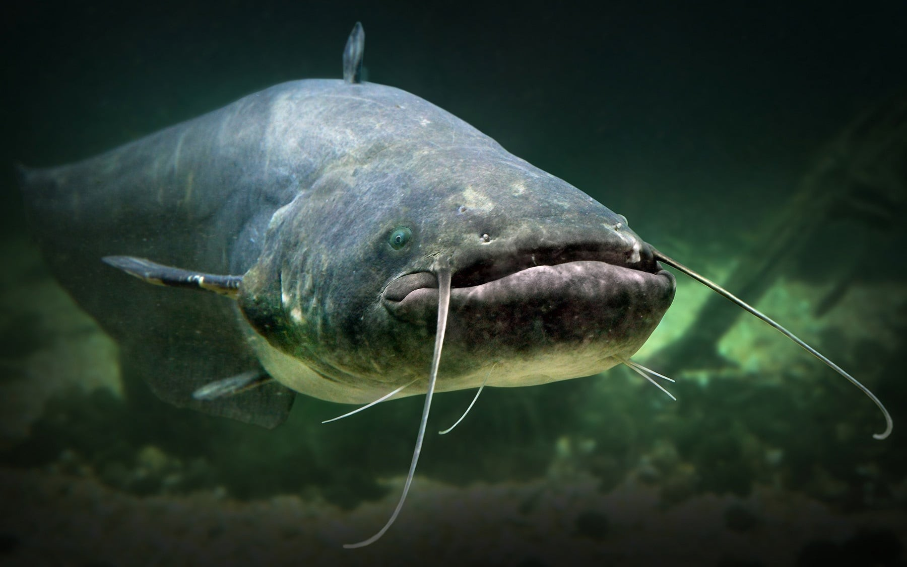

Home Ground
Lower Austria
Forests, field edges and still local waters shape almost every story told here.

About Fur & Fin
The story behind the forests, fields and waters that shaped this project.
Hello, I am Leopold Seilern, a young hunter and fisherman, and this passion has been with me since I was very young. Some of my earliest memories are of being outside with my father: sitting with him on the high seat when I was around six years old, listening to the forest and learning that nature is something you do not simply walk through, but something you observe, respect and care for. Around that same time, I also caught my first trout in a small stream, and from then on both hunting and fishing became a real part of my life.
Fur & Fin is my place to share that world. With this channel and this website, I want to show people how beautiful hunting and fishing really are, and how much they can teach you about patience, gratitude and respect for nature. I also want to give a more honest picture of hunting, because many people only connect the word with killing, while in reality it means much more than that.
Fishing has shaped me in a similar way. It taught me patience from a young age and showed me that some of the best moments outdoors are the quietest ones. Standing by a stream, a pond or the water at first light has never only been about catching a fish for me. It is also about reading the water, understanding the fish, learning from nature and enjoying the calm that comes with being outside.
Hunting is not just the moment of taking a shot. It is the responsibility that comes before and after. It means caring for the wild, watching how animals live, understanding what they need, and looking after the forest they belong to. It means helping to keep balance, protecting habitats and taking responsibility for the land instead of only taking from it.
Many people do not see that hunting is really a process of stewardship. You care for the animals, for feeding places, for quiet areas, for the forest and for the overall health of the Revier. And when you go out hunting, the goal is not always to kill. Very often it is simply to be there, to notice what is happening in nature, to learn something, and to enjoy the stillness that only the outdoors can give.
That is what I want people to feel here. For me, hunting and fishing are full of emotion, responsibility and respect. They are about the early mornings, the silence, the people beside you, the care for animals, the rhythm of the water and the deep appreciation for nature. If this page can help even a few people see hunting in a more thoughtful and honest way, then it is already doing something meaningful.
Home Ground
Forests, field edges and still local waters shape almost every story told here.
What Matters
Good days in the field are built on quiet steps, clear judgment and respect for the wild. More than trophies or catches, the focus stays on the experience, the responsibility and the places themselves.
What You'll Find
Notes from the hunt, time by the water and the rhythm of the year outdoors.
The four species that make up most of our time in the field.




The four species we most often go after in the local ponds.


